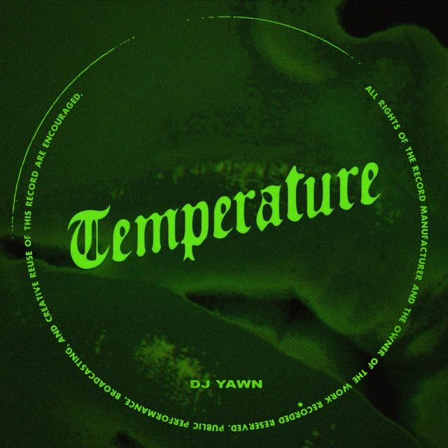
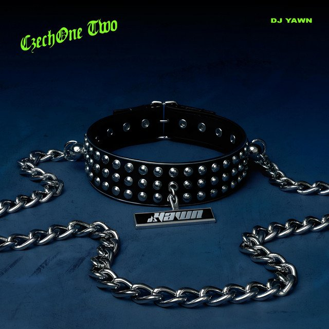
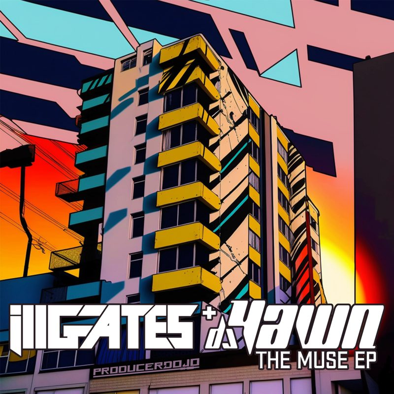
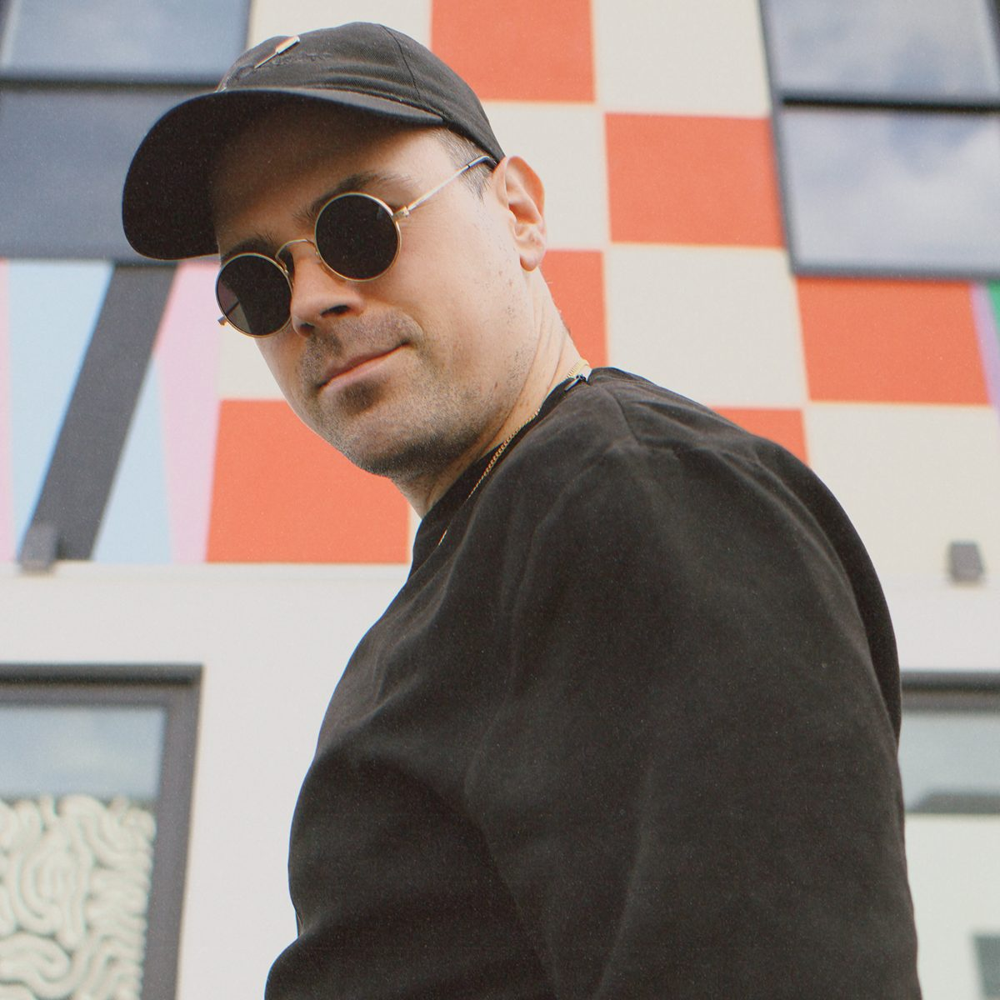
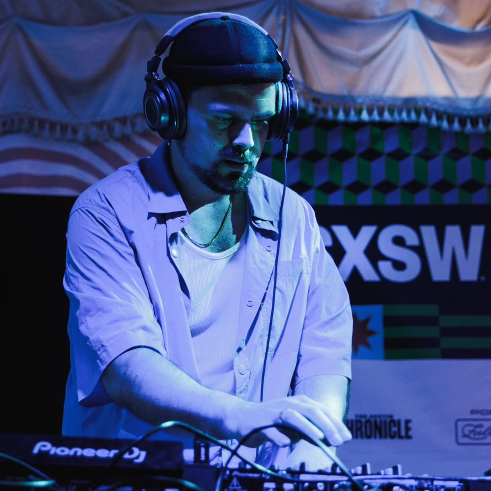
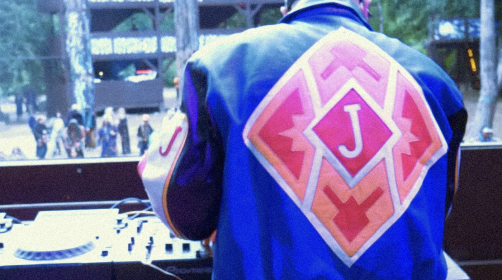

Watch


Mixes
Live at ShambhalaDeep dub and dubstep from the Village Stage.
Rooftop setVancouver, September 2024.
More on Mixcloud and SoundCloud.
Releases
The tracks on DJ YAWN's Spotify artist discography, including all four from The Muse.

TEMPERATURE / SINGLE / 2026
CZECHONE TWO / SINGLE / 2025
THE MUSE / EP / 2023On stage
- Shambhala Music Festival 2025The Chillage, Village Stage. Salmo, BC.
- Canada House during SXSW 2024Austin, TX.
- FIFA World Cup 2026 fan zoneVancouver.
- ResidenciesGuilt & Co, Lobby Lounge and Karma Lounge. Vancouver.
Photos



Press photos and logos for promo use.
Tech rider
- 2 x Pioneer CDJ-2000/3000 or similar
- Pioneer DJM-900 mixer (4-channel preferred)
- 1 booth monitor
- Table or booth with power
Set length: 60-90 minutes ideal.
Bio
Jan Orsag, aka DJ YAWN, is a Czech-born, Vancouver-based DJ and producer injecting a fresh pulse into the city's electronic underground. With mentorship from ill.Gates and collaboration with PAV4N of Foreign Beggars, he's carved out a sound anchored in percussive rhythms, dub aesthetics, and a gritty edge informed by remix culture.
His music draws from contemporary bass, dub traditions, and diasporic club culture—shaping a style that hits both cerebral and physical frequencies. His debut EP Muse, released on Producer Dojo, showcased this approach: hip-hop-laced bass music with lo-fi texture and no regard for genre boundaries.
On stage, his sets feel both precision-cut and wildly instinctive, designed to make the floor move. Whether in the club or on the festival circuit, YAWN emphasizes vibe-building over genre loyalty, keeping the energy locked and emotionally raw.
In 2025, DJ YAWN performed at Shambhala Music Festival on The Village Stage, cementing his place in North America's bass music community.
Contact
+1 778-688-0237 · Vancouver, BC